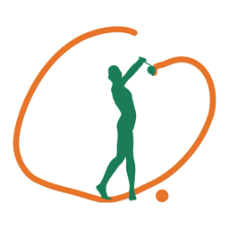

「ゴルフスイング比較3D」は、良いスイングと、よくある崩れ方（スウェー、オーバースイング、アーリーエクステンション、キャスティング、アウトサイドインなど12種類）を、同じ時間軸で3Dの人体モデルを動かして見比べられる、指導・説明用のアプリです（右打ち・中学生の体格の模式モデル、ドライバーと7番アイアン）。
App Store で見る iPhone・iPad 500円（買い切り）
インターネット接続は必要ですか？
不要です。すべての機能がオフラインで動作します。
表示される角度や数値は実際の選手の値ですか？
いいえ。人体の動き・角度・クラブの軌道は本アプリ独自の模式値で、特定の選手の動きを再現したものではありません。文献のデータは出典を明記して紹介しています。
アプリの良いスイングが唯一の正解ですか？
いいえ。ゴルフスイングは人によって多種多様です。トップの大きさ、手首の使い方、足の使い方、フィニッシュの形などは、一流選手の間でも大きく違います。アプリの良いスイングはその一例で、多くの上級者に共通する「下半身から順に回る」「前傾を保つ」といった要点を表したものです。
左打ちや、ほかのクラブには対応していますか？
現在は右打ちの、ドライバーと7番アイアンのみです。
医療機器ですか？
いいえ。指導・説明用の教材であり、診断や治療を目的としたものではありません。腰や肩、肘などに痛みや違和感がある場合は、フォームの修正より先に医療機関を受診してください。
ご意見・不具合のご報告は、下記までメールでお送りください。
natchi@symphony.plala.or.jp